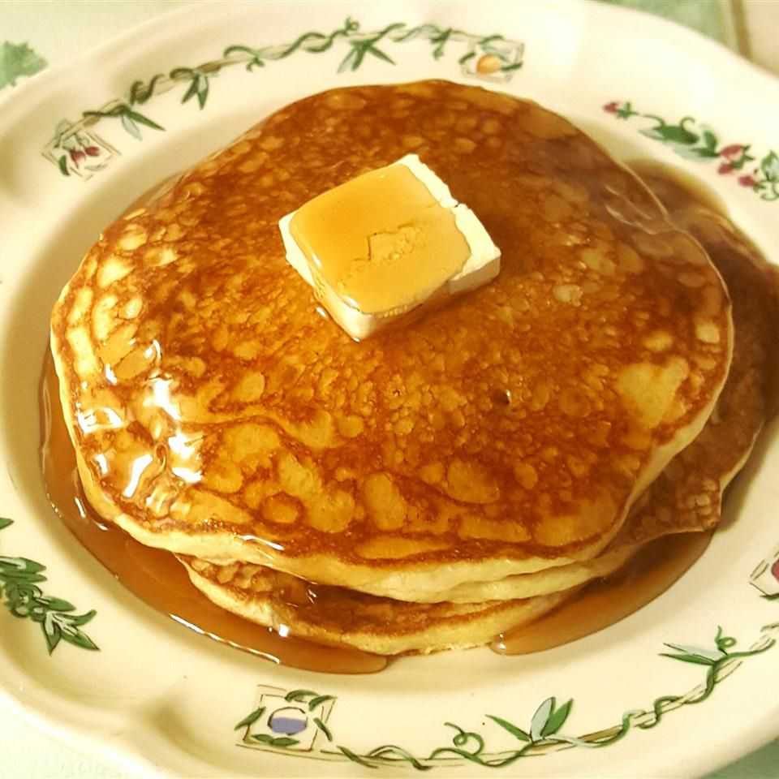

Pancakes

Descripcion
Los pancakes son un tipo de tortita fina y esponjosa que se suele servir como desayuno o brunch.
Se preparan con una mezcla de harina, leche, huevos, azúcar y levadura.
La mezcla se vierte en una sartén caliente y se cocina hasta que esté dorada por ambos lados.
Ingredientes:
- 1 taza de harina de trigo
- 2 cucharaditas de polvo de hornear
- 1/2 cucharadita de sal
- 1 cucharada de azúcar
- 1 huevo
- 1 taza de leche
- 2 cucharadas de mantequilla derretida
Preparacion:
- En un tazón grande, mezcla la harina, el polvo de hornear, la sal y el azúcar.
- En otro tazón, bate el huevo con la leche y la mantequilla derretida.
- Vierte la mezcla húmeda sobre la mezcla seca y revuelve hasta que estén bien combinados. No mezcles demasiado, ya que esto puede hacer que los pancakes sean duros.
- Calienta una sartén antiadherente a fuego medio. Engrasa la sartén con un poco de mantequilla o aceite.
- Vierte 1/4 de taza de la mezcla en la sartén para cada pancake. Cocina durante 2-3 minutos por cada lado, o hasta que estén dorados y esponjosos.
- Sirve los pancakes calientes con tu topping favorito, como miel, jarabe de arce, fruta fresca, crema batida o chocolate.
Back